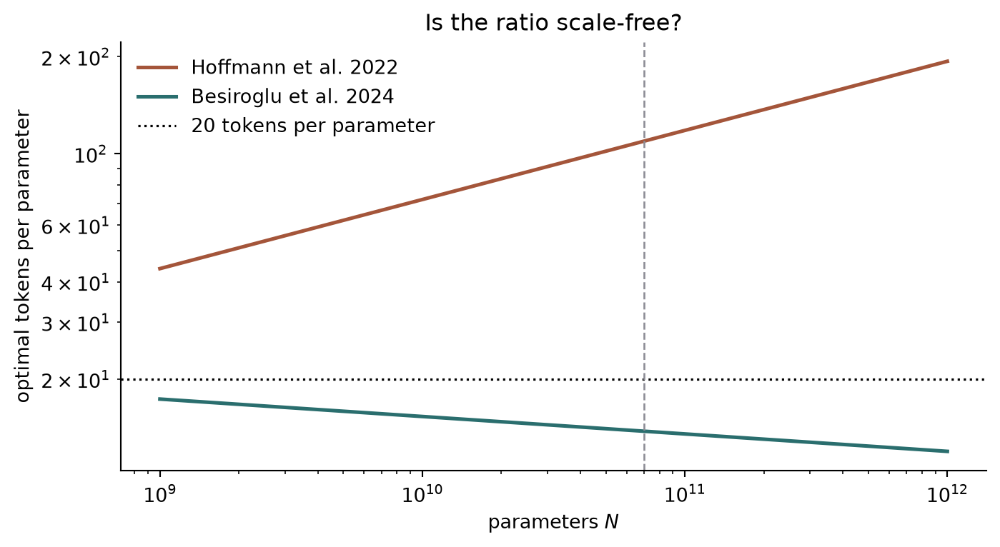
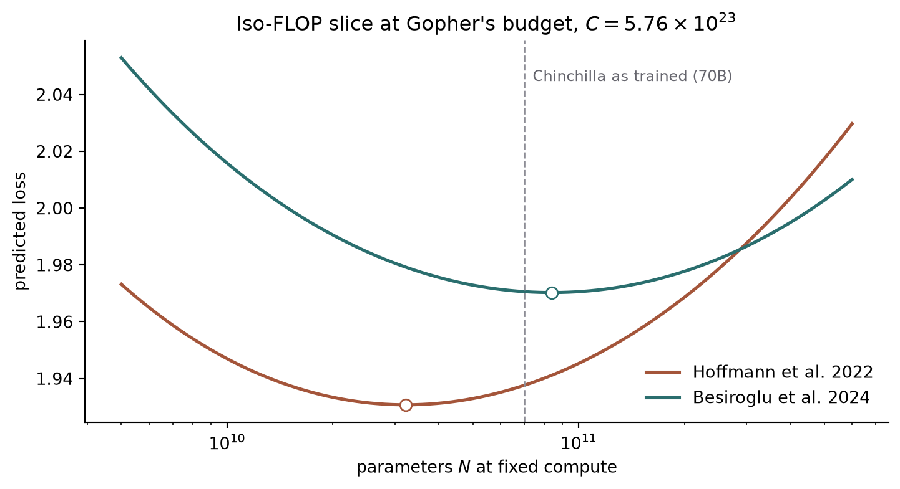

Chinchilla’s Parametric Fit Does Not Imply Twenty Tokens per Parameter
Scaling Laws
Replication
Compute-Optimal Training
Reproducing the compute-optimal allocation implied by the published loss constants: the scaling exponents come out exactly, the token-to-parameter ratio does not.
Author
Diego Filippo Marino
Published
August 14, 2026
NoteWhat this replicates
Target. The compute-optimal allocation implied by the parametric loss fit reported in Hoffmann et al. 2022, Approach 3 (Hoffmann et al. 2022): the exponents a and b in N_{\text{opt}} \propto C^{a} and D_{\text{opt}} \propto C^{b}, and the resulting token-to-parameter ratio.
Method. Analytic minimization of the published loss function under the compute constraint C = 6ND, evaluated numerically. No training runs, no data reconstruction from the paper’s figures.
Result. The exponents reproduce to three decimal places. The token-to-parameter ratio does not reproduce: the published constants imply between 44 and 194 tokens per parameter over the relevant range, not the 20 that Chinchilla was actually trained at. An independent replication reached the same conclusion by a different route (Besiroglu et al. 2024).
The Chinchilla paper made two claims that are usually quoted together. The first is a functional form: the loss of a transformer trained to convergence decomposes into an irreducible term plus separate power laws in parameters and tokens. The second is a prescription: at a fixed compute budget, parameters and tokens should be scaled in roughly equal proportion, which at the 70B scale works out to about twenty training tokens per parameter.
The prescription came from three estimation procedures. The first two vary model size at fixed compute and read the minimum off the resulting curves. The third fits the parametric form directly. This replication takes the third one, which is the only one whose output is a set of numbers a reader can carry away, and asks whether those numbers imply the prescription.
The fit and its constraint
The reported form is
L(N, D) = E + \frac{A}{N^{\alpha}} + \frac{B}{D^{\beta}},
\tag{1}
with published values E = 1.69, A = 406.4, B = 410.7, \alpha = 0.34, \beta = 0.28. Training compute for a dense transformer is taken as C = 6ND.
Minimizing Equation 1 subject to C = 6ND is a two-line Lagrange problem. With multiplier \lambda, the stationarity conditions are \alpha A N^{-\alpha-1} = 6\lambda D and \beta B D^{-\beta-1} = 6\lambda N. Dividing one by the other and cancelling gives a condition with no \lambda in it:
Equation Equation 2 says the optimum equalizes the two reducible loss terms after weighting each by its own exponent. Solving it for D gives the optimal allocation as a curve rather than a point:
Substituting into C = 6ND and solving for N gives the compute exponents:
N_{\text{opt}} \propto C^{a},\quad D_{\text{opt}} \propto C^{b},
\qquad
a = \frac{\beta}{\alpha + \beta},\quad b = \frac{\alpha}{\alpha + \beta} .
\tag{4}
Everything below follows from Equation 4 and Equation 3 and the five published constants.
Check one: the exponents
import numpy as npimport matplotlib.pyplot as pltFITS = {"Hoffmann et al. 2022": dict(E=1.69, A=406.4, B=410.7, alpha=0.34, beta=0.28, reported=(0.454, 0.546)),"Besiroglu et al. 2024": dict(E=1.82, A=514.0, B=2115.2, alpha=0.35, beta=0.37, reported=(0.512, 0.488)),}def exponents(fit): a = fit["beta"] / (fit["alpha"] + fit["beta"])return a, 1.0- aprint(f"{'fit':>24}{'a derived':>10}{'a reported':>11}{'b derived':>10}{'b reported':>11}")for name, fit in FITS.items(): a, b = exponents(fit) ra, rb = fit["reported"]print(f"{name:>24}{a:>10.4f}{ra:>11.3f}{b:>10.4f}{rb:>11.3f}")
fit a derived a reported b derived b reported
Hoffmann et al. 2022 0.4516 0.454 0.5484 0.546
Besiroglu et al. 2024 0.5139 0.512 0.4861 0.488
This reproduces. Both papers’ reported compute exponents fall out of Equation 4 given only their own \alpha and \beta, to within a fraction of a percent. The residual gap of 0.002 on the first row is consistent with a and b having been fitted independently rather than derived from the other two constants.
So the parametric fit is internally coherent at the level of exponents, and the derivation above is the right one. That matters, because the next check uses the same derivation and fails.
Check two: tokens per parameter
The prescription “scale parameters and data equally” is a statement about D/N being roughly constant. Equation Equation 3 says exactly when that holds:
\frac{D_{\text{opt}}}{N} \;\propto\; N^{(\alpha - \beta)/\beta},
\qquad\text{constant in } N \iff \alpha = \beta .
\tag{5}
The published \alpha = 0.34 and \beta = 0.28 are not equal, and not nearly equal: the exponent on the right of Equation 5 is 0.06/0.28 = 0.214. A twenty-fold increase in model size multiplies the optimal token-to-parameter ratio by 20^{0.214} \approx 1.9. There is no scale-free ratio to quote.
def tokens_per_param(fit, N): coef = (fit["beta"] * fit["B"] / (fit["alpha"] * fit["A"])) ** (1.0/ fit["beta"])return coef * N ** ((fit["alpha"] - fit["beta"]) / fit["beta"])sizes = np.geomspace(1e9, 1e12, 200)fig, ax = plt.subplots(figsize=(7.4, 4.1))for (name, fit), color inzip(FITS.items(), ["#a4553a", "#2a6e6e"]): ax.loglog(sizes, tokens_per_param(fit, sizes), lw=1.9, color=color, label=name)ax.axhline(20.0, color="black", ls=":", lw=1.2, label="20 tokens per parameter")ax.axvline(7e10, color="#8d8d96", ls="--", lw=1.0)ax.annotate("Chinchilla, 70B", xy=(7e10, 3.5), fontsize=9, color="#65656d", ha="center")ax.set(xlabel="parameters $N$", ylabel="optimal tokens per parameter", title="Is the ratio scale-free?")ax.legend(frameon=False)ax.spines[["top", "right"]].set_visible(False)plt.tight_layout()plt.show()for name, fit in FITS.items(): lo, mid, hi = (tokens_per_param(fit, n) for n in (1e9, 7e10, 1e12))print(f"{name:>24} 1B: {lo:6.1f} 70B: {mid:6.1f} 1T: {hi:6.1f}")

Figure 1: Optimal tokens per parameter implied by each parametric fit, across three decades of model size. The published Hoffmann constants imply a strongly scale-dependent ratio far above twenty; the re-estimated constants imply a mildly scale-dependent ratio near it.
Hoffmann et al. 2022 1B: 44.0 70B: 109.4 1T: 193.5
Besiroglu et al. 2024 1B: 17.3 70B: 13.8 1T: 11.9
The published constants put the optimal ratio at 70B parameters somewhere near 124 tokens per parameter, and the ratio climbs with scale. Chinchilla itself was trained at 70B parameters on 1.4T tokens, which is 20. The model the paper trained is not the model the paper’s own third fit recommends.
Check three: allocation at Gopher’s budget
The same disagreement shows up in the headline comparison. Chinchilla was trained at the compute budget used for Gopher, about 5.76 \times 10^{23} FLOPs, and the paper’s argument is that this budget is better spent on 70B parameters and 1.4T tokens than on Gopher’s 280B parameters and 300B tokens.
GOPHER_FLOPS =5.76e23def loss(fit, N, D):return fit["E"] + fit["A"] / N ** fit["alpha"] + fit["B"] / D ** fit["beta"]def optimum(fit, C):"""Closed-form minimizer of the parametric loss at fixed compute C = 6ND.""" coef = (fit["beta"] * fit["B"] / (fit["alpha"] * fit["A"])) ** (1.0/ fit["beta"]) power = fit["alpha"] / fit["beta"] N = (C / (6.0* coef)) ** (1.0/ (1.0+ power))return N, C / (6.0* N)grid = np.geomspace(5e9, 6e11, 300)fig, ax = plt.subplots(figsize=(7.6, 4.2))for (name, fit), color inzip(FITS.items(), ["#a4553a", "#2a6e6e"]): curve = loss(fit, grid, GOPHER_FLOPS / (6.0* grid)) ax.semilogx(grid, curve, lw=1.9, color=color, label=name) N_star, D_star = optimum(fit, GOPHER_FLOPS) ax.plot([N_star], [loss(fit, N_star, D_star)], "o", ms=7, mfc="white", color=color)print(f"{name:>24} optimal N = {N_star /1e9:6.1f}B D = {D_star /1e12:5.2f}T"f" ratio = {D_star / N_star:6.1f}")ax.axvline(7e10, color="#8d8d96", ls="--", lw=1.0)ax.annotate("Chinchilla as trained (70B)", xy=(7.4e10, ax.get_ylim()[1] *0.995), fontsize=9, color="#65656d", va="top")ax.set(xlabel="parameters $N$ at fixed compute", ylabel="predicted loss", title=r"Iso-FLOP slice at Gopher's budget, $C = 5.76 \times 10^{23}$")ax.legend(frameon=False)ax.spines[["top", "right"]].set_visible(False)plt.tight_layout()plt.show()
Hoffmann et al. 2022 optimal N = 32.2B D = 2.98T ratio = 92.6
Besiroglu et al. 2024 optimal N = 83.8B D = 1.14T ratio = 13.7

Figure 2: Iso-FLOP slices of each parametric fit at Gopher’s compute budget, with the minimizing model size marked. The two fits disagree about where the optimum sits by more than a factor of two.
Under the published constants the optimum at this budget is roughly 32B parameters on 3.0T tokens. Under the re-estimated constants it is roughly 84B on 1.1T, which brackets the 70B model that was actually trained. The paper’s stated conclusion is reproduced by the second fit and not by the first.
Why the first fit fails
The failure is not arithmetic and it is not a misreading of the functional form, since check one used the same algebra and passed. The natural suspicion is that the reported constants are themselves off, and that is what the independent replication concludes.
Besiroglu and coauthors reconstructed the underlying data from the paper’s figures and refit the same parametric form (Besiroglu et al. 2024). They report three findings: the published Approach 3 estimates are inconsistent with the paper’s own Approaches 1 and 2, they fit the reconstructed data poorly, and the confidence intervals reported for them are implausibly narrow, narrow enough to require hundreds of thousands of training runs where the paper describes fewer than five hundred. Their refit gives E = 1.82, A = 514.0, B = 2115.2, \alpha = 0.35, \beta = 0.37, which is the second row used throughout above, and which restores agreement with the other two procedures.
Read through Equation 5, the repair has a clean interpretation. The re-estimated exponents satisfy \alpha \approx \beta to within 6%, so the optimal ratio is nearly scale-free, which is precisely the property the twenty-tokens-per-parameter rule of thumb assumes. The original pair differ by 21%, which is enough to make any single ratio wrong almost everywhere.
What this replication does and does not establish
It establishes that the arithmetic linking the published constants to the published prescription does not close, and it locates the disagreement in a specific place: the inequality of \alpha and \beta.
It does not establish that Chinchilla is the wrong model to have trained. The compute-optimal claim also rests on Approaches 1 and 2, which the replication paper finds sound, and those approaches support the model that was built. What fails here is one of three estimation routes, and the headline recommendation survives the failure by the other two.
It also does not touch anything empirical. No models were trained, no losses were measured, and the reconstruction of the paper’s underlying data was done by others rather than repeated here. Everything above is a consequence of five numbers and a constraint, which is the narrowest kind of replication there is. Its only real virtue is that it is fully checkable in about forty lines of code, and that it demonstrates the general point that a scaling law’s headline prescription and its published parameters can disagree without anyone noticing for two years.
Related reading
Three Ways a Curve Bends uses the same scaling-law machinery to ask when a smooth power law can produce an apparently sharp capability transition.
Four Quantizers, One Quadratic Form is a companion in method: take published results, write them in one notation, and check what the notation forces.
References
Besiroglu, Tamay, Ege Erdil, Matthew Barnett, and Josh You. 2024. “Chinchilla Scaling: A Replication Attempt.”arXiv Preprint arXiv:2404.10102. https://arxiv.org/abs/2404.10102.
Hoffmann, Jordan, Sebastian Borgeaud, Arthur Mensch, et al. 2022. “Training Compute-Optimal Large Language Models.”Advances in Neural Information Processing Systems 35. https://arxiv.org/abs/2203.15556.
Citation
BibTeX citation:
@online{marino2026,
author = {Marino, Diego Filippo},
title = {Chinchilla’s {Parametric} {Fit} {Does} {Not} {Imply} {Twenty}
{Tokens} Per {Parameter}},
date = {2026-08-14},
url = {https://diegofilippomarino.github.io/Eigenholm/replications/chinchilla-parametric-fit/},
langid = {en}
}